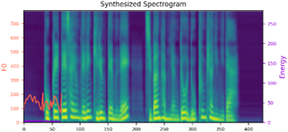
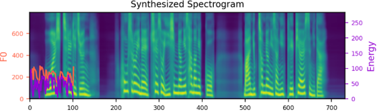
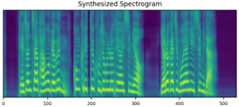

We propose a novel high-fidelity expressive speech synthesis model, UniTTS, that learns and controls multiple non-hierarchically correlated attributes without conflict.
UniTTS represents phonemes and non-linguistic attributes in a single unified embedding space.
The proposed method is particularly effective in reflecting both speaker ID and emotion because it does not add the variance by the two overlapping attributes redundantly, and predicts prosodic attributes based on the speaker and emotion IDs.
UniTTS learns the unified embedding space leveraging a residual network that extends FastSpeech2.
We additionally applied a data augmentation technique to improve the fidelity and controllability over the non-linguistic attributes.
In experiments, the visualization results exhibited that UniTTS successfully learned multiple attributes in the unified embedding space.
As well, UniTTS synthesized high-fidelity speech signals while controlling multiple attributes, and transferred speech style from the reference speech.
Visualization of Unified Embedding Space
These visualization results illustrate the latent space of style attributes modeled by UniTTS.
We used EmotionTTS dataset for visualization. EmotionTTS dataset consists of 15 speakers and 4 emotions(neutral, happy, sad and angry).
Initial phoneme embeddings that does not contain style information
(a) Initial phoneme embeddings colored by phoneme type
(b) Initial phoneme embeddings colored by speaker label
(c) Initial phoneme embeddings colored by emotion label
These figures are the t-SNE visualization of the distribution of the unstyled phoneme embeddings extracted from the locations marked as A in Figure 3 (please refer the paper).
(a) shows that the unstyled phoneme embedding represents phoneme types, while (b)and (c) show that it does not contain speaker or emotion information.
Residual embeddings of style attributes (speaker ID, emotion, pitch and energy)
(a) t-SNE visualization of speaker embeddings (B-A) colored by speaker label
(b) t-SNE visualization of emotion embeddings (C-B) colored by emotion label
(c) PCA visualization of pitch embeddings (E-D) colored by predicted pitch value
(d) PCA visualization of energy embeddings (F-E) colored by predicted energy value
These figures are the distribution of the residual embeddings of speaker, emotion, pitch, and energy. (Please note that A, B, C, D, E and F are denoted in paper-figure 3.)
The uppercase letters indicate the locations in Fig. 3 where the embeddings were extracted.
These figures show that the residual embeddings are effective in representing the style attributes.
Full style embeddings that jointly represent all attributes (speaker ID, emotion, unlabeled local prosody, pitch, and energy)
(a) Full style embeddings(F-A) colored by speaker label
(b) Full style embeddings(F-A) colored by emotion label
(c) Full style embeddings normalized by speaker embedding (F-B) colored by speaker label
(d) Full style embeddings normalized by speaker embedding (F-B) colored by emotion label
These figures are the t-SNE visualization of the distribution of the full style embeddings that incorporate all style attributes.
The uppercase letters indicate the locations in Fig. 3 where the embeddings were extracted.
(a) and (b)show that the full style embedding contains both speaker and emotion information.
(c) shows that the full style embedding normalized by the means of the speaker embeddings does not contain speaker information.
(d) shows that the variance in emotion is dominant after normalizing the full style embedding by the means of speaker embeddings.
Speaker and emotion modeling
These audio samples demonstrate the speaker and emotion modeling performance of UniTTS.
neutral
happy
sad
angry
nea speaker mel
nea speaker wav
nem speaker mel
nem speaker wav
nec speaker mel
nec speaker wav
neo speaker mel
neo speaker wav
Energy and Pitch Control (with and without Transform-aware Data Augmentation)
Energy control
The following samples were synthesized by UniTTS with increased, the original, and decreased energy values
- Row 1: the ground truth samples and augmented samples whose energy values were increased or decreased using the SOX toolkit.
- Row 2: the audio samples synthesized by UniTTS applying data augmentation
- Row 3: the audio samples synthesized by UniTTS not applying data augmentation
Without data augmentation, UniTTS produced speech samples with deteriorated quality when the energy value was increased or decreased. Particularly, when the energy value was decreased, it produced severly broken and distorted samples.
However, when applying data augmentation, it produced clean samples even with increased or decreased energy values.
increased energy values
the original energy values
decreased energy values
GT mel
GT wavs
w/ data aug. mel
w/ data aug. wavs
w/o data aug. mel
w/o data aug. wavs
Pitch control
The following samples were synthesized by UniTTS with increased, the original, and decreased pitch values
Please note that adjusting the pitch of the voice using the SOX toolkit has a side-effect that changes the timbre as shown in the first row.
- Row 1: the ground truth samples and augmented samples whose pitch values were increased or decreased using the SOX toolkit.
- Row 2: the audio samples synthesized by UniTTS applying data augmentation
- Row 3: the audio samples synthesized by UniTTS not applying data augmentation
Without data augmentation, UniTTS shows limited ability to control pitch, as shown more clearly in the spectrograms.
When applying data augmentation, it controlled pitch more effectively but changed timbre, because it was trained with the augmented samples whose timbre was changed due to the side-effect of the SOX toolkit.
We ask the listener to compare the samples focusing on the ability to control pitch.
increased pitch values
the original pitch values
decreased pitch values
GT mel
GT wavs
w/ data aug. mel
w/ data aug. wavs
w/o data aug. mel
w/o data aug. wavs
Pitch and energy control
The following samples were synthesized by UniTTS controling both pitch and energy.
Applying data augmenation, UniTTS can effectively control pitch and energy.
the original pitch and energy values
pitch +, energy +
pitch +, energy -
pitch -, energy +
pitch -, energy -
GT mel
GT wavs
w/ data aug. mel

w/ data aug. wavs
w/o data aug. mel
w/o data aug. wavs
Style Mixing
Speaker identity transfer
The first two columns show the synthesized samples with different speaker and emotion IDs.
We extracted the speaker embedding used to synthesize the first samples and other propody embeddings used to synthesize the second samples.
Then, we combined the embeddings to synthesize the third samples.
The third samples have the timbre of the first samples and the style of the second samples.
The sources of speaker embedding
The sources of other style embeddings
The samples synthesized with the combined style embedding
emh speaker + emg(angry)'s prosody mel
emh speaker + emg(angry)'s prosody wav
emh speaker + emb(happy)'s prosody mel
emh speaker + emb(happy)'s prosody wav
emb speaker + emg(angry)'s prosody mel
emb speaker + emg(angry)'s prosody wav
emb speaker + ema(sad)'s prosody mel
emb speaker + ema(sad)'s prosody wav
Emotion representation transfer
The first two columns show the synthesized samples with different speaker and emotion IDs.
We extracted the emotion embedding used to synthesize the first samples and other propody embeddings used to synthesize the second samples.
Then, we combined the embeddings to synthesize the third samples.
The third samples have the emotion of the first samples and the style of the second samples.
The sources of emotion embedding
The sources of other style embeddings
The samples synthesized with the combined style embedding
emb's neutral emotion + emb(sad)'s other prosodies mel
emb's neutral emotion + emb(sad)'s other prosodies wav
emh's happy emotion + emh(angry)'s other prosodies mel
emh's happy emotion + emh(angry)'s other prosodies wav
emg's sad emotion + emg(happy)'s other prosodies mel
emg's sad emotion + emg(happy)'s other prosodies wav
emb's angry emotion + emb(happy)'s other prosodies mel

emb's angry emotion + emb(happy)'s other prosodies wav
Transfer of emotion, duration, pitch and energy from ETOD samples to KSS speaker
The KSS dataset contains 12,853 speech samples WITHOUT emotion label spoken by a SINGLE female speaker. (Please note that no emotion label exists in KSS dataset)
The ETOD dataset contains 6,000 samples with 4 emotion types spoken by 15 speakers.
We transferred the style of the samples in the ETOD dataset to the KSS speaker.
We extracted the speaker embedding from the KSS samples, that do not have emotion labels, and the other style embeddings from the samples of the ETOD dataset.
Then, we synthesized speech using the combined style embedding.
The first and second columns show the samples of the KSS dataset and the ETOD dataset, respectively.
The third column shows the syntesized samples using the combined style embeddings.
The sources of speaker embedding. (KSS dataset)
The sources of other style embeddings (ETOD dataset)
The samples synthesized with the combined style embedding
KSS + emh speaker(angry)'s prosodies mel

KSS + emh speaker(angry)'s prosodies wav
KSS + emg speaker(angry)'s prosodies mel
KSS + emg speaker(angry)'s prosodies wav
KSS + emb speaker(neutral)'s prosodies mel
KSS + emb speaker(neutral)'s prosodies wav
KSS + ema speaker(sad)'s prosodies mel
KSS + ema speaker(sad)'s prosodies wav
Transfer of duration, pitch, and energy from ETOD samples to KES speaker
We transferred the duration, pitch, energy of the samples in the ETOD dataset to the KES speaker.
We extracted the speaker and emotion embeddings from the KES samples spoken by a single speaker and the duration, pitch, and energy embeddings from the samples in the ETOD dataset.
Then, we synthesized speech using the combined style embedding.
The first and second columns show the samples of the KES dataset and the ETOD dataset, respectively.
The third column shows the syntesized samples using the combined style embeddings.
The sources of speaker and emotion embeddings. (KES dataset)
The sources of other style embeddings (ETOD dataset)
The samples synthesized with the combined style embedding.
We compared samples from UniTTS(w.o. aug) with other method such as separate embedding and gradient reversal.
UniTTS produces the most natural and similar samples compared to separate embedding and gradient reversal.
(Please note that these samples are from MOS test.)
Overall, UniTTS (w.o. aug) produces natural samples while keeping speaker id and emotion similarity.
UniTTS(w.o. aug) produces best result with respect to natural duration, pitch, energy and intonation, compared to other methods.
In addition, UniTTS (w.o. aug) can preserve speaker id, even on unknown combination of speaker and emotion.
(e.g. speaker ema's identity and kss's curious emotion)
Reference sample
Separate embedding
Gradient reversal
UniTTS (w/o aug)
sample 1
sample 2
sample 3
sample 4
unseen*
unseen*: synthesized with speaker ema's id + kes's emotion(curious).